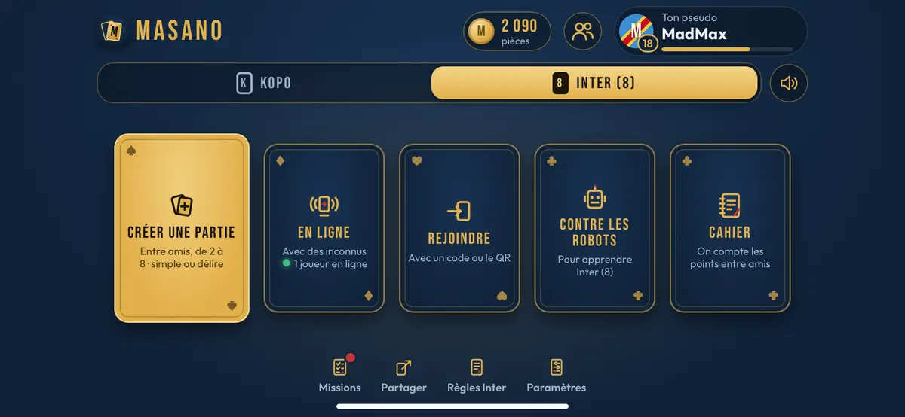
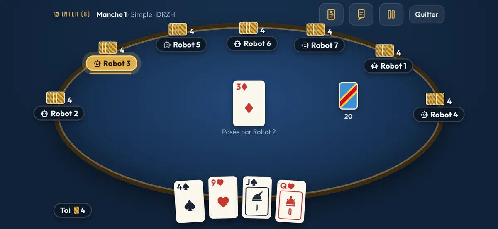
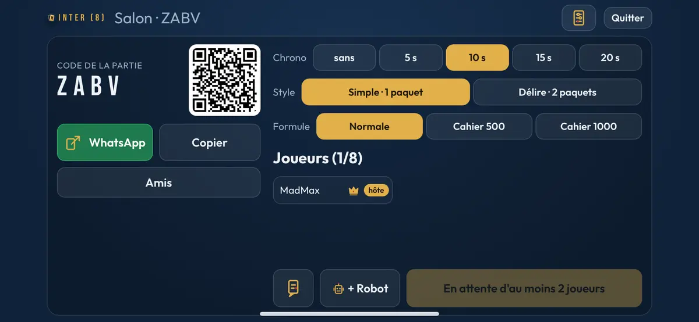

Pour téléphones Android · environ 98 Mo · version bêta
Sur iPhone, l'appli arrive bientôt sur l'App Store. En attendant, tu peux jouer tout de suite sur masano.online, sans rien installer.

Deux jeux, une seule appli
KKopo
Le jeu de cartes à élimination : une manche, un éliminé, le dernier debout gagne. Annonce KATAPSS pour te qualifier d'un coup.
De 2 à 9 joueurs
Entre amis, en ligne ou contre les robots
8Inter (8)
Vide ta main le premier ! Le 8 demande la couleur, le 2, le 10 et le Joker font piocher.
De 2 à 8 joueurs
Partie simple ou en mode délire
Aperçu

À la table

Le salon entre amis
Installer l'appli en 4 étapes
Touche « Télécharger l'APK ». Le fichier masano.apk arrive dans tes téléchargements. Si Chrome dit « ce type de fichier peut être dangereux », touche « Télécharger quand même ».
Ouvre le fichier. Depuis la notification de fin de téléchargement, ou dans l'appli « Fichiers » → Téléchargements → masano.apk.
Autorise l'installation. Android demande d'autoriser cette source : touche « Paramètres », active « Autoriser depuis cette source » (ou « Sources inconnues »), puis reviens en arrière.
Touche « Installer », puis « Ouvrir ». Masano est maintenant sur ton écran d'accueil. Bonne partie !
Play Protect affiche un avertissement
L'appli est en bêta et n'est pas encore sur le Play Store, donc Google ne la connaît pas encore. Touche « Plus d'infos » puis « Installer quand même ».
« Appli non installée » ou « Conflit avec un package existant »
Désinstalle l'ancienne version de Masano, puis ouvre de nouveau masano.apk. Vérifie aussi qu'il te reste au moins 250 Mo d'espace libre.
Je n'ai pas Android
Sur iPhone, l'appli arrive bientôt sur l'App Store. Sur iPhone comme sur ordinateur, tu peux déjà jouer sur masano.online.